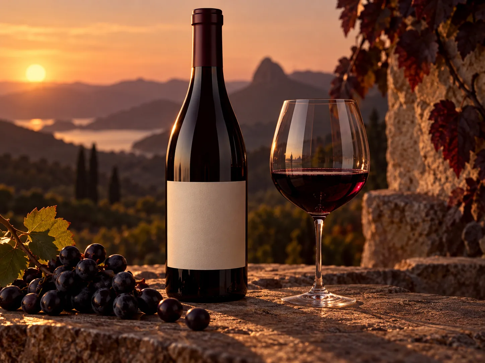

Descobrir
Perfis claros para comparar e encontrar o que combina com cada ocasião.
Uma vitrine para descobrir rótulos pelo que eles despertam. A história começa na origem e continua na mesa.
Explorar a coleção
Imagem conceitual · explore a páginaPara uma marca real, origem, safra, notas e processos precisam vir do produtor. Nesta demonstração, a narrativa mostra como fotografia, movimento e informação poderiam construir desejo sem esconder o que importa para escolher.
Escolha um perfil para ver uma amostra da experiência de descoberta. Rótulos e descrições são fictícios.
Na versão de uma vinícola ou loja, filtros poderiam aproximar o público do rótulo ideal e encaminhar para compra ou atendimento.
Para uma noite longa: uma proposta de corpo marcante e final acolhedor.
Sugestão de momento: conversa à mesa.Uma recomendação demonstrativa por ocasião e estilo. Em uma loja real, descrições, disponibilidade e harmonizações precisam ser confirmadas pelo produtor ou especialista.
Que clima combina?Para um encontro à mesa com clima envolvente, comece por um perfil imaginário mais intenso.
Não representa aconselhamento de compra, harmonização ou estoque real.Uma jornada de produto pode explicar escolhas sem apressar quem está conhecendo a marca.
Perfis claros para comparar e encontrar o que combina com cada ocasião.
Origem, notas e serviço apresentados junto do rótulo, quando confirmados pelo produtor.
Um contato direto para dúvidas e recomendações antes da decisão.
Aurora é uma marca fictícia criada para mostrar possibilidades de experiência digital no universo de vinhos e bebidas premium.
Conhecer a ServAgency